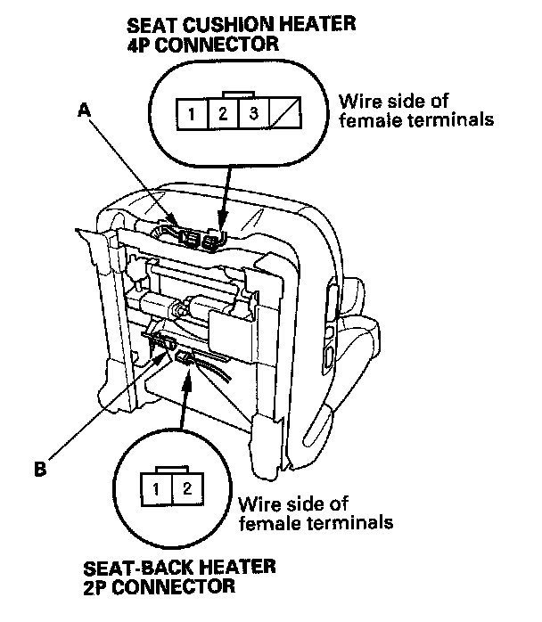
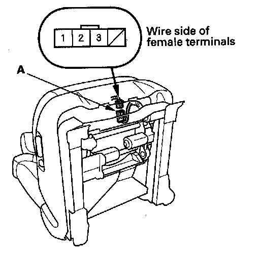
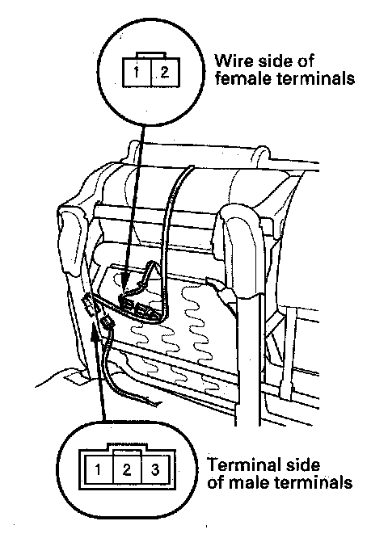

Seat Heater Test
Seat Heater TestDriver's Seat
1. Remove the driver's seat.

2. Disconnect the 4P connector (A) and 2P connector (B) from the seat heater.
Seat-back
3. Check for continuity between the seat-back heater 2P connector No. 1 and No. 2 terminals. There should be continuity.
Seat Cushion
4. Check for continuity between the seat cushion heater 4P connector No. 1 and No. 2 terminals, and the No. 1 and No. 3 terminals. There should be continuity.
5. If the continuity is not as specified, replace the appropriate seat heater.
Front Passenger's Seat
1. Remove the passenger's seat.

2. Disconnect the 4P connector (A) from the seat heater.
3. Check for continuity between the seat heater 4P connector No. 1 and No.3 terminals, and No. 2 and No. 3 terminals. There should be continuity.
4. If the continuity is not as specified, replace the seat heater.
Second Row Seat
1. Remove the second row seat.

2. Disconnect the 3P connector (A) and 2P connector (B) from the seat heater.
Seat-back
3. Check for continuity between the seat-back heater 2P connector No. 1 and No. 2 terminals. There should be continuity.
Seat Cushion
4. Check for continuity between the seat cushion heater 3P connector No. 2 and No. 3 terminals. There should be continuity.
5. Connect the 2P connector, and check for continuity between the seat cushion heater 3P connector No. 1 and No. 2 terminals. There should be continuity.
6. If the continuity is not as specified, replace the appropriate seat heater.